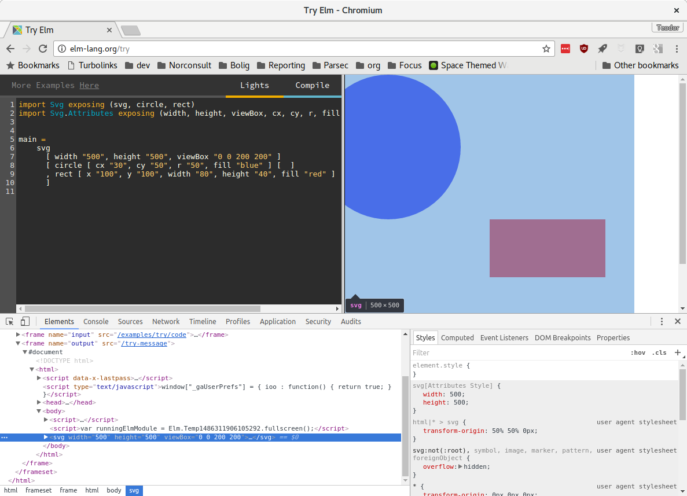

Tegning med SVG
Tegning med SVG
Skrevet av: Teodor Heggelund
Introduksjon
I denne oppagaven skal vi lære hvordan vi kan tegne med Elm.
Her er noen vanlige elementer i webprogrammering:
-
HTML: Struktur.
- "Dette er en overskrift"
- "Dette er et avsnitt"
- "Dette er en liste"
-
CSS: Utseende.
- "Slik skal en overskrift se ut"
- "Slik skal et avsnitt se ut"
- "Slik skal en liste se ut"
-
Elm eller Javascript: Logikk
- "Dette skjer når jeg trykker på denne knappen"
- "Når jeg skriver i dette feltet, ser jeg at det andre forandrer seg"
Vi skal nå bruke SVG for å tegne:
- SVG: Tegning
- "Dette er en sirkel"
- "Sirkelen har sentrum i punktet (3,4)"
- "Sirkelen har bredde (diameter) 100"
Jeg kommer til å vise eksempler med Try Elm. Hvis du vil kjøre nettsiden lokalt, er det helt greit.
Steg 1: sirkel og rektangel
Vi prøver først litt med Try Elm.
import Svg exposing (svg, circle, rect)
import Svg.Attributes exposing (width, height, viewBox, cx, cy, r, fill, x, y, width, height)
main =
svg
[ width "500", height "500", viewBox "0 0 200 200" ]
[ circle [ cx "30", cy "50", r "50", fill "blue" ] [ ]
, rect [ x "100", y "100", width "80", height "40", fill "red" ] - [ ]
]
Da skal du se noe slikt:
La oss plukke koden fra hverandre.
 Jeg kjører lokalt, og får feil!
Jeg kjører lokalt, og får feil!
Hvis du prøver å kjøre lokalt, får du denne beskjeden fra Elm:
Starting downloads...
● elm-lang/html 2.0.0
● elm-lang/virtual-dom 2.0.4
● elm-lang/core 5.1.1
Packages configured successfully!
I cannot find module 'Svg'.
Module 'Main' is trying to import it.
Potential problems could be:
* Misspelled the module name
* Need to add a source directory or new dependency to elm-package.json
Da må vi installere pakken svg.
-
Hvis jeg har en mappe på skrivebordet mitt som heter Elm, skal jeg se følgende:
C:\Users\teodor\Desktop\Elm>
Fungerer det nå?
Importere moduler
Tidligere har vi brukt pakken Html og importert funksjoner som p for avsnitt og h1 for overskrifter.
import Svg exposing (svg, circle, rect)
import Svg.Attributes exposing (width, height, viewBox, cx, cy, r, fill, x, y, width, height)
Nå bruker vi pakken Svg og importerer funksjoner som circle for sirkel og rect for rektangler.
Rect er det ikke (per februar 2017) noe eksempel for.
SVG-boksen
Det første vi gjør er å lage oss en passe stor boks vi kan tegne i.
main =
svg
[ width "500", height "500", viewBox "0 0 200 200" ]
-- Resten tar vi etterpå
width "500" sier at vi skal bruke 500 pixler i bredden.
height "500" sier at vi skal bruke 500 pixler i høyden.
-

viewBox "0 0 200 200" definerer koordinatsystemet vårt: x er fra 0 til 200 og y er fra 0 til 200.
Jeg har satt et koordinatsystem med "bredde" 200 til å passe til 500 pixler på skjermen. En 20x20 firkant blir 50px x 50 px stor på skjermen.
Vi bruker gjerne koordinatsystem fra 0 til 100, fordi det er lett å forholde seg til.
Elementer i SVG
Nå har vi sagt at vi vil bruke koordinater mellom 0 og 200 til å tegne på nettsiden vår. Nå kan vi bruke disse til å tegne:
[ circle [ cx "30", cy "50", r "50", fill "blue" ] [ ]
, rect [ x "100", y "100", width "80", height "40", fill "red" ] - [ ]
Vi tar circle først:
| Atributt | Verdi | Forklaring |
|---|---|---|
cx | "30" | Sentrum ligger i x=30 |
cy | "50" | Sentrum ligger i y=50 |
r | "50" | Sirkelens radius er 50 |
fill | "blue" | Sirkelen er fylt med fargen blå |
Obs! (0,0) er øverst til venstre, og (200,200) er nederst til høyre. Tenk at vi starter å lese i (0,0):
(0,0) ---- (100, 0) ---- (200, 0) ---→ x
|
(0, 100) (100, 100) (200, 100)
|
(0, 200) (100, 200) (200, 200)
|
↓
y
Din tur!
Så er det rect sin tur:
| Atributt | Verdi | Forklaring |
|---|---|---|
x | "100" | Begynn å tegne rektangelet i x=100 |
y | "100" | ... og y=100. |
width | "80" | Bredden er 80 |
height | "40" | Høyden er 40 |
fill | "red" | Og fyllfargen er rød. |
Din tur!
Nå ser du ikke sirkelen i det hele tatt.
-
-- fra noe sånt: [ circle -- ... , rect -- ... ] -- til noe sånt: [ rect -- ... , circle -- ... ]
Steg 2: kurver
En kurve ("path" på engelsk), er en rett eller myk strek mellom flere punkter. Vi kan tegne både rette kurver og myke kurver.
En linje går mellom to punkter. Vi skal ha noe som går mellom mange punkter!
Importere funksjoner for å tegne kurve
Hvordan å importere funksjoner fra moduler
I Elm bygger vi opp funksjoner. Vi kan importere en modul, og bruke funksjoner fra modulen:
import Html
main = Html.text "Hello!"
Vi kan også importere funksjoner direkte fra en modul:
import Html exposing (text)
main = text "Hello!"
For å importere mange funksjoner fra samme modul, legger vi komma mellom funksjonene:
import Html exposing (text, h1, p, ul, li)
-- ...
Tegne skråstrek
-
[circle [ -- ... , rect [ -- ... , path [ fill "none", stroke "black", d "M0,0 200,200" ] []
Min ser nå slik ut:
Steg 3: tegne smiley
Nå skal vi lage et smilefjes!
Det er lurt å begynne på nytt i dette steget. Da kan du åpne en ny fane med Try Elm eller lage en ny elm-fil.
Pass på at du får med deg funksjonene du trenger når du gjør oppgavene under!
Vi starter med å lage oss et koordinatsystem der x og y er mellom 0 og 100.
Sirkler
main =
svg
[ width "500", height "500", viewBox "0 0 100 100" ]
[ -- Ingen elementer ennå!
]
Så fyller vi dette med en stor, gul sirkel.
main =
svg
[ width "500", height "500", viewBox "0 0 100 100" ]
[ circle [ cx "5", cy "5", r "5", fill "yellow" ] - [ ]
]
Ånei! Den var ikke stor!
Bezierkurver
Bezierkurve! Det var et rart navn.
Vi bruker ofte bezierkurver når vi vil ha en myk kurve. Det finnes forskjellige typer bezierkurver:
| Navn på norsk | Navn på engelsk | Nøkkel | Forklaring |
|---|---|---|---|
| Lineær kurve | Linear curve | L | Rett strek mellom to punkter ("linje") |
| Kvadratisk kurve | Quadratic curve | Q | Myk strek mellom tre punkter ("kvadrat") |
| Kubisk kurve | Cubic curve | C | Myk strek mellom fire punkter ("kube") |
En munn som bezierkurve
Her er en path med bezierkurve i Elm:
path [ fill "none", stroke "black", d "M20,60 C 40,50 60,50 80,60 " ] []
I strengen "M20,60 C 40,50 60,50 80,60 " dukker det opp to mystiske variabler. C står for "Cubic", og M står for "Move to"; begynn her.
Ånei! Det ble et surt fjes!
Ellipser
Her er to ellipser:
En sirkel har lik høyde og bredde. En ellipse kan være flat eller tynn; den kan ha forskjellig radius i x- og y-retning.
Her er Elm-koden som lager den røde ellipsen:
ellipse [ cx "30", cy "40", rx "5", ry "10", fill "red" ] - [ ]
Og denne lager den lilla ellipsen:
ellipse [ cx "70", cy "40", rx "10", ry "5", fill "purple" ] - [ ]
Du finner ellipse i Svg, og cx og cy i Svg.Attributes.
Øyne som ellipser
Her er sånn min ble seende ut:
-
path [ fill "red", stroke "black", d "M20,60 C 40,80 60,80 80,60 " ] [] -
circle [ cx "50", cy "50", r "50", stroke "black", fill "yellow" ] - [ ]
Svg inne i et Html-dokument
Det går an å skrive Svg inne i et Html-dokument. Her er et eksempel:
import Svg exposing (svg, circle, rect)
import Svg.Attributes exposing (width, height, viewBox, cx, cy, r, fill, x, y, width, height)
import Html exposing (text, div, h1, p)
main =
div []
[ h1 [] [text "Mine figurer!"]
, svg
[ width "500", height "500", viewBox "0 0 200 200" ]
[ circle [ cx "30", cy "50", r "50", fill "blue" ] [ ]
, rect [ x "100", y "100", width "80", height "40", fill "red" ] - [ ]
]
, p [] [text "Her har jeg tegnet en firkant og en sirkel!"]
]
Tegne på din egen nettside
Forbedre denne siden
Funnet en feil? Kunne noe vært bedre?
Hvis ja, vennligst gi oss tilbakemelding ved å lage en sak på Github eller fiks feilen selv om du kan. Vi er takknemlige for enhver tilbakemelding!